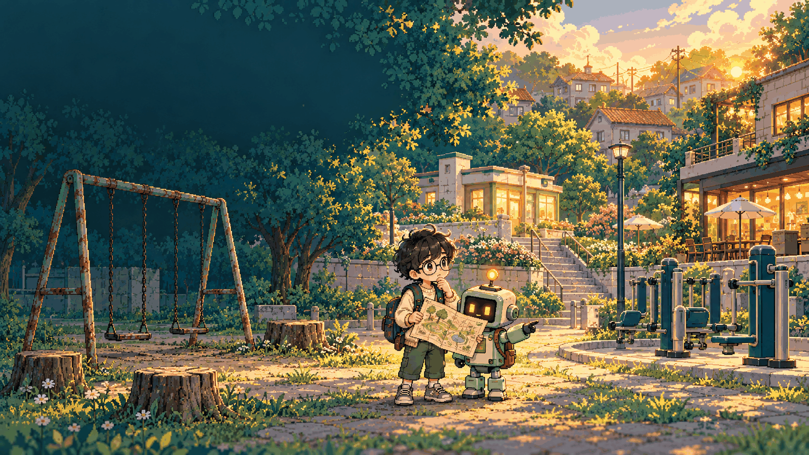
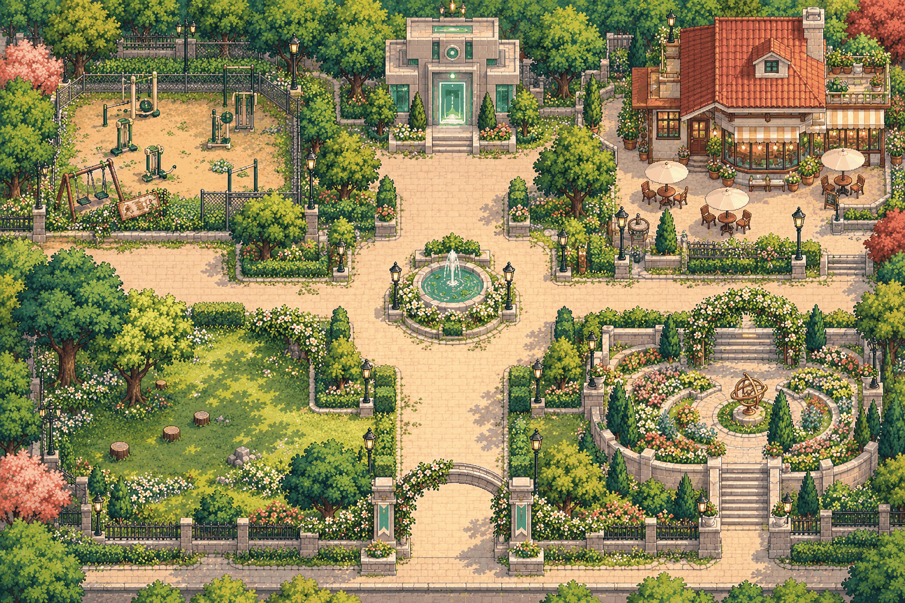

NEW MISSION · ETHICITY사라진
사라진
우리들의 공원
AI가 만든 완벽한 공원에는
왜 아무도 없을까?
사라진 별빛공원의 비밀
효율적이라는 공원,
정말 모두를 위한 걸까?
윤리시티의 AI 파크봇이 오래된 공원을 새롭게 꾸몄어요. 하지만 개장식에 주민들이 보이지 않아요. 직접 조사하고, AI의 판단을 고치고, 모두의 공원을 설계해 보세요.
🔎 현장 조사🤖 AI 기준 분석🌿 공원 설계
캐릭터 선택
진행 상태는 이 브라우저에만 저장됩니다. 실제 개인정보를 입력하지 마세요.
CHAPTER 01
별빛공원 탐험
주민의 목소리를 들어 보세요.
단서 0/4
🌳 별빛공원방향키 / WASD 이동 · 접근 시 자동 대화 · 스페이스로 단서 수집
🤖 파크봇의 원래 기준
하루 평균 이용객 수 45%
유지·관리비 35%
상업시설 예상 수익 20%
"계산 효율은 높지만, 주민들의 생활 정보는 분석하지 못했습니다."
🧩 AI에 추가할 기준을 고르세요
필수적인 공공성 기준 3개를 찾아 선택해 보세요.
선택한 기준을 확인해 보세요.
🗺️ 공원 설계도
0 / 10
🛝놀이터
🪑광장
🌳쉼터
🌷정원
💡산책길
♿연결길
시설 카드를 누르거나 지도 위 표식을 클릭해서 설치·제거할 수 있어요.
공원 개선 예산을 계획해 보세요.
🏗️ 시설 선택
👧 놀이 0🌿 휴식 0♿ 접근 0
🏅
ETHICITY · PUBLIC INTEREST
모두의 목소리를 담은 공원
파크봇이 새 원칙을 배웠어요. 좋은 공원은 하나의 숫자로만 정해지지 않아요.
생각해 보기
이용객 수가 적어도 꼭 필요한 공공시설은 무엇일까요? 다른 주민의 생각을 들었을 때 내 판단은 어떻게 달라졌나요?